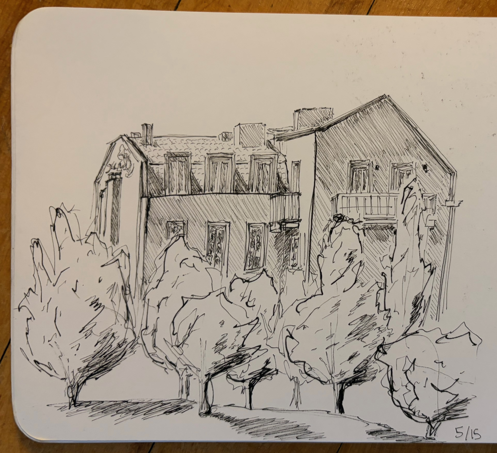
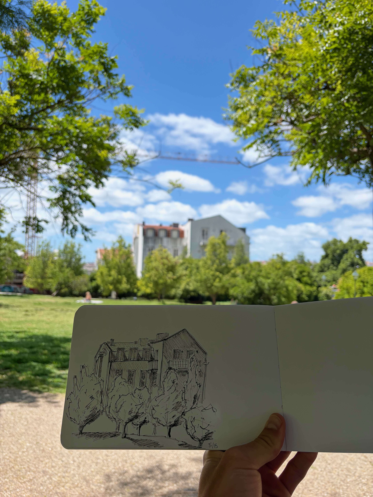
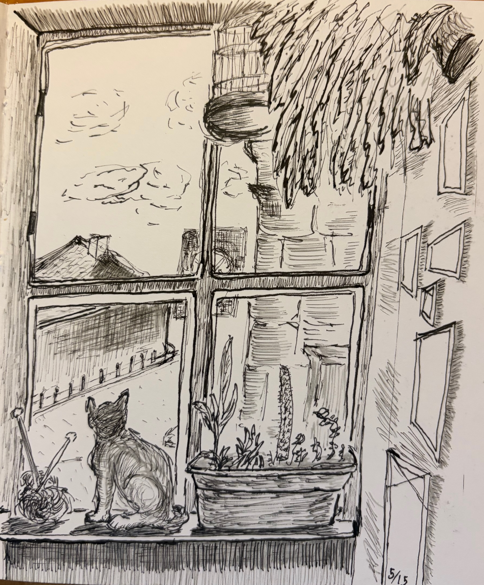
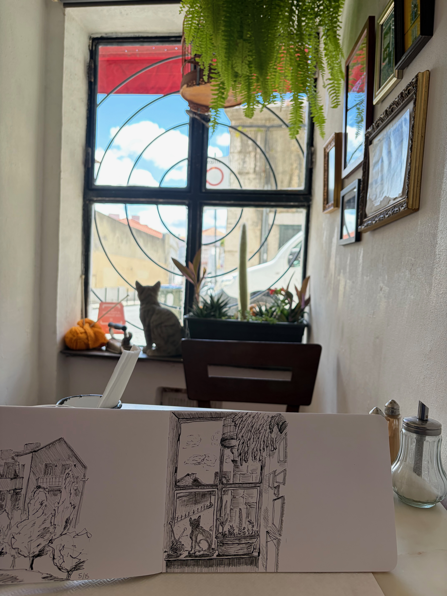
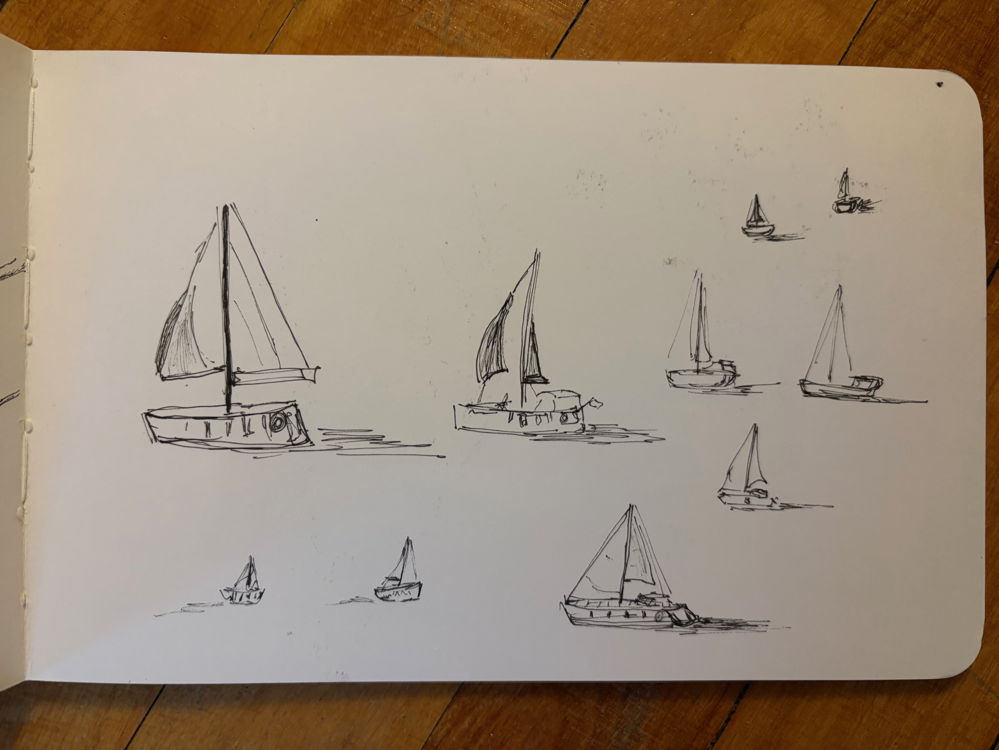
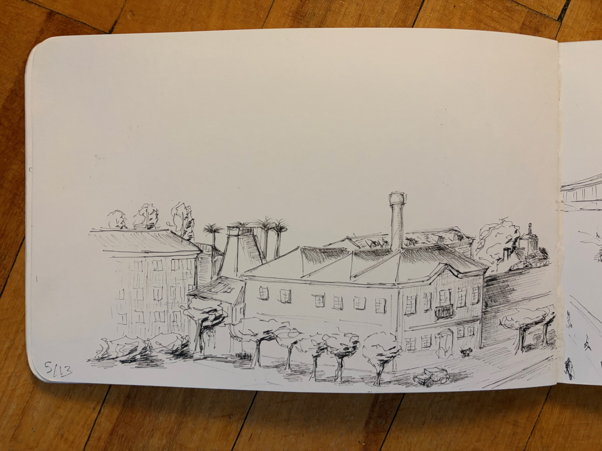
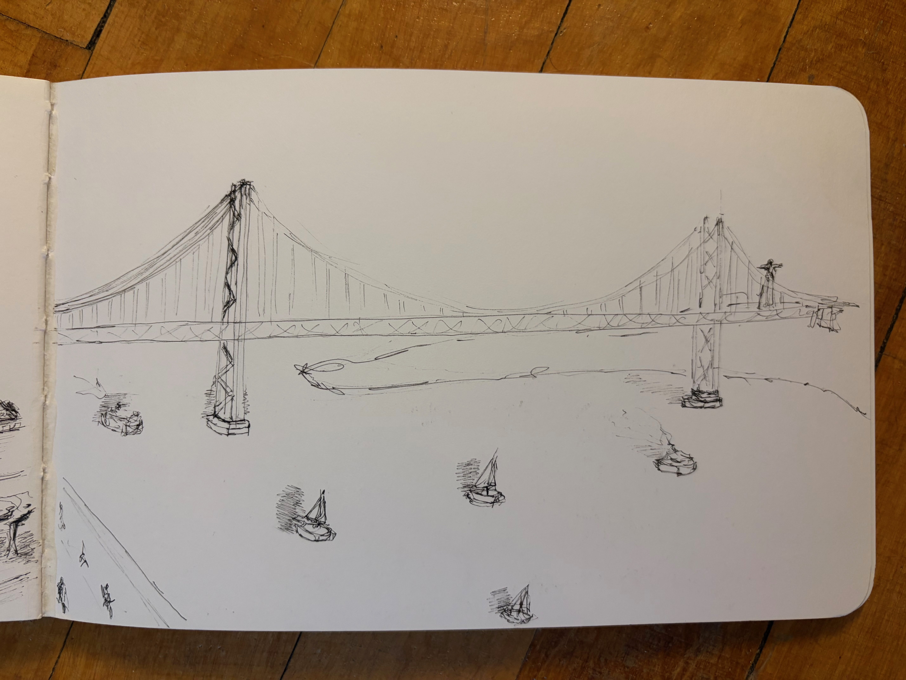

Five sketches from my three day trip to Lisbon after studying abroad in Seville, Spain. I captured different moments of my days, which were full of walking around the city and feeling its vibrant culture. The water sketches were by the 25 de Abril Bridge, which I appreciated as it is a parallel to the San Francisco Golden Gate Bridge that I call home. My favorite of these sketches to do was the quick depictions of the boats as they passed by me on the water.






